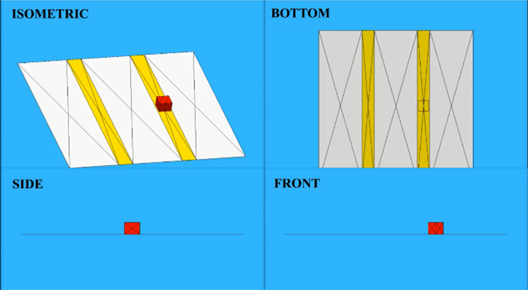
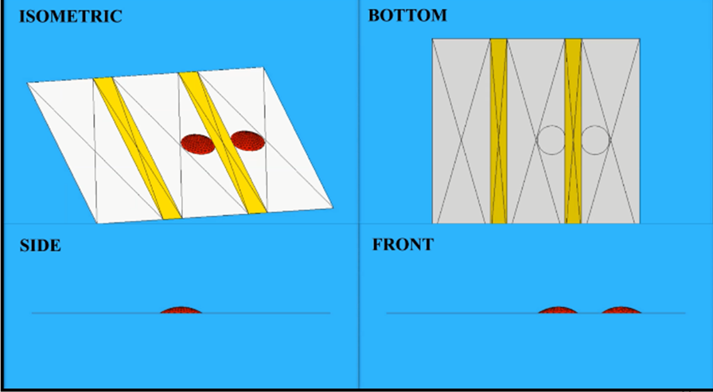
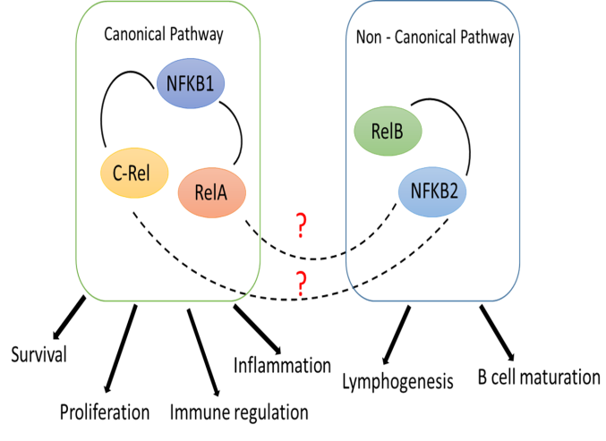

Biology, borrows its understanding to a large extent from thermodynamics, hydrodynamics, statistical mechanics and soft matter physics. To understand biological systems & processes quantitatively, utilizing elements of fluid dynamics, the underlying principles of soft matter physics, and frameworks from statistical physics drive me towards research. The existence of active matter at wide length scales, ranging from colonies of bacteria, and microtubule-kinesin motors, to a flock of birds has piqued my interest.
My research interests include performing experiments as well as computational simulations of soft matter, wetting phenomena, microfluidics, membrane biophysics and active matter .

Indian Institute of Technology Kharagpur, India
Bachelor & Master of Technology in Chemical Engineering.
Micro-specialization in Biomedical Devices and Instrumentation.
My Timeline
-
Magnetic Microswimmers on the Interface
Sessile Droplet Evaporation: Effect of gravity and substrate inclination
∙ Developed the experimental setup to study magnetocapillary microswimmers.
∙ Literature survey on Multiphase Lattice Boltzmann models for evaporation study.November 2020 – Ongoing
IIT Madras -
Droplet Dynamics on Patterned Surface
∙ Fabricated a substrate with alternating wettability contrast utilising chemical gradients.
Click here to know more
∙ Analysed droplet splitting from high speed camera recorded images using ImageJ and MATLAB.
∙ Obtained the variation of splitting velocity with the wettability difference of the contrast patternMarch 2018 - April 2020
IIT Kharagpur -
Red blood cell-mimicking PDMS Micro-particle
∙ Modelled droplet generation in a t-junction using Fluent and investigated the flow regimes.
Click here to know more
∙ Fabricated the t-junction device using soft lithography techniques for generation of micro-particles.
∙ Characterized the continuous and dispersed phase properties and optimized the flow parameters.August 2019 - March 2020
IIT Kharagpur -
Capillary Bridges during Liquid - Liquid Phase Separation
∙ Analysed the shape transformations of a vesicle with intra-membrane domains using energy minimisation.
Click here to know more
∙ Developed a platform for predicting the meniscus shape and forces between the vesicles during LLPS.June 2019 - July 2019
Durham University
-

Investigating new genes related to NF-kB family
∙ Analysed in-house database for understanding the cross-talk and the regulated biological functions.
Click here to know more
∙ Identified two classes of genes showing a cell-type specific correlation with the NF-kB family.
∙ Developed an analysis platform for predicting genetic networks of phenotypes using MATLAB.May 2018 - June 2018
IMB, Academia Sinica
My Mentors
Prof. Sunando DasGupta
Chemical Engineering, IIT Kharagpur, India
sunando@che.iitkgp.ac.in
Click to visit their websiteProf. Halim Kusumaatmaja
Physics, Durham University, UK
halim.kusumaatmaja@durham.ac.uk
Click to visit their website
Prof. Soumen Das
School of Medical Science, IIT Kharagpur, India
sou@smst.iitkgp.ac.in
Click to visit their websiteMagnetocapillary Microswimmers: From self-assembled structures to artificial appendages
At such small length scales, surface tension forces become dominant. An interesting phenomenon arising from it is the Cheerios effect, where small objects floating on a liquid tend to aggregate. The competition between these capillary attractive forces and other repulsive forces can lead to the formation of self-assembled clusters. For instance, it has been shown that soft tiny ferromagnetic beads when placed on the air-water interface, form reversible clusters. These clusters also known as the magnetocapillary self-assemblies are the subject of interest in this work. Furthermore, when exposed to oscillating magnetic fields, these assemblies spontaneously move along the interface. Though such systems have previously been studied, they are limited to homogeneous liquid media, far from the chemical and mechanical complexity of environments in application scenarios. Further work can be done to study more complex self-assemblies to systems with microfabricated cilia, by changing the magnetic field and playing with both the properties of the particles as well as that of the interface.
Sessile Droplet Evaporation: Evaluating the effect of gravity and substrate inclination
The effect of gravitational effect on drying dynamics of a stationary liquid droplet on an inclined surface is explored. Depending on the nature of the substrate surface, the liquid considered, and additional effects such as relative humidity, and convection, evaporation into ambient air/pure vapour phase with only solvent molecules different LBM models can been explored. For the simplest case of evaporation of a sessile droplet of a pure liquid from a smooth solid surface, a binary-fluid lattice-Boltzmann algorithm based on Cahn–Hilliard dynamics can be used, as reported in Soft Matter, 2014, 10, 8267 (2014).
Droplet Dynamics on Patterned Surfaces
In recent years, there has been a significant investigation in droplet microfluidics, and droplet splitting, in particular, owing to its immense applications in areas of drug discovery, high-throughput screening, nanotechnology, lab-on-chip devices, and material synthesis. We have used an efficient and novel technique for substrate fabrication which can thereafter be exploited to split droplets using the alternating wettability contrast (up to 100°). In essence, a micro-sized water droplet is dispensed on the hydrophobic region, neighboring hydrophilic regions on both sides, and splitting is observed. The motion of such a droplet has been understood as the superposition of sliding of the center of mass and the spreading of the droplet perimeter initially, leading to its splitting into two daughter droplets and their subsequent motion. The dependence of the droplet splitting process on the wettability difference, ∆θ, has been investigated. The velocity was analyzed as a function of ∆θ, while also considering minimization of energy
>Link to master Thesis > Go back to home 
Capillary Bridges: Nucleation, growth and forces between the vesicles
Although negligible at large scales, capillary forces may become dominant over gravity and other surface forces at small length scale. A small amount of liquid bridging two solid membranes may result in a strong adhesion due to surface tension as well as Laplace pressure. Using the software Surface Evolver, a computational model of a capillary bridge formed by a liquid droplet between two vesicles was developed in order to a) study the forces between the vesicles and the impact of varying various physical parameters and b) investigate nucleation and formation and the role of membrane confinement. The platform is interactive and allows user to input and vary the physical parameters such as the bending rigidities, surface tension values and volume of the system. The software then minimizes the energy taking into account all the aforementioned energies, and helps to determine the final configuration of the system.
> Go back to homePDMS Micro-particle Generation in a T-junction for Hemodynamic Studies
The study of hemodynamics is of vital importance as they help to assess this relationship between the cardiovascular system and the oxygen needs of the body's tissues. Such assessments are designed to allow medical professionals to make proper decisions for their patients and help diagnose and prevent CVDs. To perform such studies and in vitro experiments of blood flow, blood analogue fluids are generally used to avoid the ethical and practical considerations involved with using blood. To account for the flexibility of the RBCs, we used PDMS particles in the suspension. Here we present a study to produce PDMS micro-particles, to be used in biomimetic fluids, by droplet microfluidics using a T-junction. As the advantages of this technology, it miniaturises the volume of reagents consumed as well as gives highly mono-dispersed particles.
> Go back to homeThe Useful Suspects: Investigating new neighbors and relatives of the NF-kB family
Nuclear Factor-kB (NF-kB) family transcription factors are central regulators of cellular decision after inflammatory signals and stresses. These members of the NF-kB family (RelA, RelB, c-Rel, NF-kB1, and NF-kB2) act pleiotropically to specify transcriptional programs important for cell proliferation and apoptosis. Previous studies have shown the canonical and non-canonical signaling pathways of the NF-kB family. However, there is limited understanding on their crosstalk and the regulated biological functions. Here, we aim to identify genes that are phenotypically, genetically and epigenetically similar to the NF-kB family. We found that two classes of genes showing a cell-type specific correlation with the NF-KB family transcription factors. Our established analysis platform can help establish unknown gene-gene interactions useful for predicting genetic networks of associated phenotypes.
> Go back to home